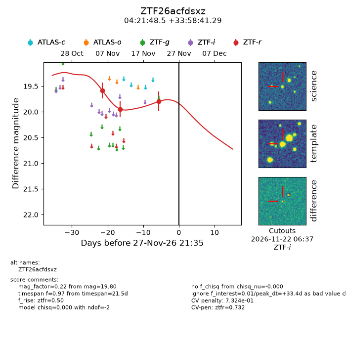
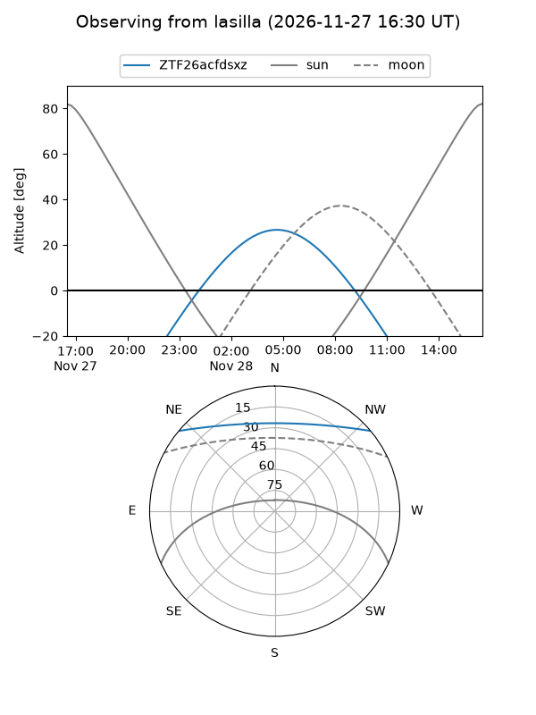
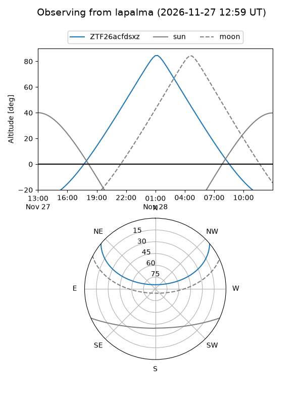
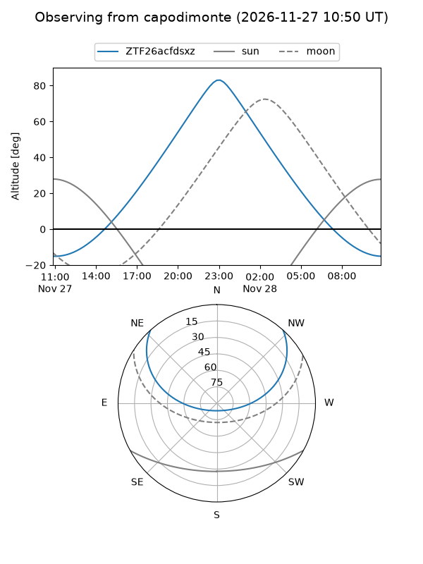
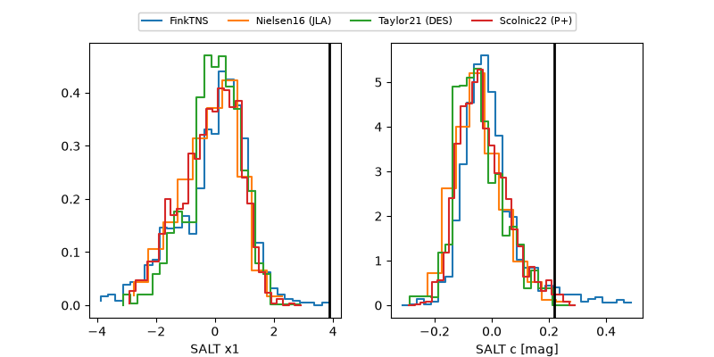

ZTF26acfdsxz
Target ZTF26acfdsxz at 2026-11-28 09:12
Aliases and brokers:
FINK-ZTF: ztf.fink-portal.org/ZTF26acfdsxz
Lasair-ZTF: lasair-ztf.lsst.ac.uk/objects/ZTF26acfdsxz
ALeRCE-ZTF: alerce.online/object/ZTF26acfdsxz
Direct TNS query: direct search
alt names
ZTF26acfdsxz (ztf,fink_ztf)
Coordinates:
equatorial (ra, dec) = 65.4519,+33.97814
equatorial (HMS+DMS) = 04:21:48.46,+33:58:41.29
galactic (l, b) = (165.1064,-11.15690)
Flags:
likely cv: !!
CV pen: 0.7323591692575532
peak dt: +33.9
Photometry:
last ztfr=19.80
3 ztfr detections
Lightcurve

Visibility



Additional plots
